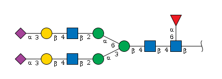
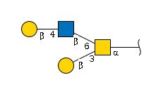
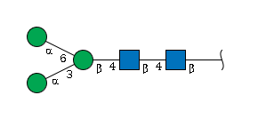
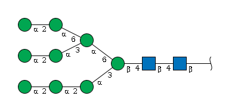
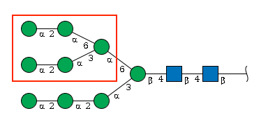

This article introduces IUPAC-condensed glycan notation, the main
text format used by glyrepr for representing glycan
structures. The goal is to show how a branched glycan structure can be
written as a compact, readable string.
Why Are There So Many Glycan Formats?
Different communities have developed different ways to describe glycans, each optimized for a specific use case. Some formats are easy for people to read, some are better for databases and software, and others preserve detailed chemical information.
Let’s use one N-glycan as an example:

The same molecule can be written in several formats:
IUPAC-condensed:
Neu5Ac(a2-3)Gal(b1-4)GlcNAc(b1-2)Man(a1-3)[Neu5Ac(a2-3)Gal(b1-4)GlcNAc(b1-2)Man(a1-6)]Man(b1-4)GlcNAc(b1-4)[Fuc(a1-6)]GlcNAc(b1-IUPAC-extended:
α-D-Neup5Ac-(2→3)-β-D-Galp-(1→4)-β-D-GlcpNAc-(1→2)-α-D-Manp-(1→3)[α-D-Neup5Ac-(2→3)-β-D-Galp-(1→4)-β-D-GlcpNAc-(1→2)-α-D-Manp-(1→6)]-β-D-Manp-(1→4)-β-D-GlcpNAc-(1→4)[α-L-Fucp-(1→6)]-β-D-GlcpNAc-(1→WURCS:
WURCS=2.0/6,12,11/[a2122h-1b_1-5_2*NCC/3=O][a1122h-1b_1-5][a1122h-1a_1-5][a2112h-1b_1-5][Aad21122h-2a_2-6_5*NCC/3=O][a1221m-1a_1-5]/1-1-2-3-1-4-5-3-1-4-5-6/a4-b1_a6-l1_b4-c1_c3-d1_c6-h1_d2-e1_e4-f1_f3-g2_h2-i1_i4-j1_j3-k2InChI:
InChI=1S/C90H148N6O66/c1-21-47(116)59(128)62(131)81(142-21)140-20-40-69(55(124)43(77(135)143-40)93-24(4)108)152-78-44(94-25(5)109)56(125)66(36(16-103)148-78)153-82-63(132)72(156-86-76(61(130)51(120)33(13-100)147-86)158-80-46(96-27(7)111)58(127)68(38(18-105)150-80)155-84-65(134)74(53(122)35(15-102)145-84)162-90(88(138)139)9-29(113)42(92-23(3)107)71(160-90)49(118)31(115)11-98)54(123)39(151-82)19-141-85-75(60(129)50(119)32(12-99)146-85)157-79-45(95-26(6)110)57(126)67(37(17-104)149-79)154-83-64(133)73(52(121)34(14-101)144-83)161-89(87(136)137)8-28(112)41(91-22(2)106)70(159-89)48(117)30(114)10-97/h21,28-86,97-105,112-135H,8-20H2,1-7H3,(H,91,106)(H,92,107)(H,93,108)(H,94,109)(H,95,110)(H,96,111)(H,136,137)(H,138,139)/t21-,28-,29-,30+,31+,32+,33+,34+,35+,36+,37+,38+,39+,40+,41+,42+,43+,44+,45+,46+,47+,48+,49+,50+,51+,52-,53-,54+,55+,56+,57+,58+,59+,60-,61-,62-,63-,64+,65+,66+,67+,68+,69+,70+,71+,72-,73-,74-,75-,76-,77+,78-,79-,80-,81+,82-,83-,84-,85-,86+,89-,90-/m0/s1Each format serves its purpose:
- IUPAC formats: readable text formats for describing glycan structures.
- WURCS/GlycoCT: structured formats designed for databases and software.
- Semantic formats: formats designed for linking data across platforms.
- Chemical formats: formats used for detailed chemical representation.
Why glyrepr Uses IUPAC-Condensed
When building glyrepr, we needed a native text format
for glycan structures. IUPAC-condensed is a practical choice because it
balances readability and information content.
- Human-readable: structures can usually be interpreted without specialized software.
- Information-rich: it captures the monosaccharides, branches, linkages, anomers, and substituents needed for many glycomics analyses.
- Widely used: it is familiar to many researchers in the glycomics community.
- Flexible: it can represent both simple and complex glycan structures.
For other formats such as WURCS or GlycoCT, the broader
glycoverse workflow can use parser packages such as
glyparse.
Reading IUPAC-Condensed Notation
Step 1: Monosaccharide Symbols
Every glycan is built from monosaccharide units, and IUPAC notation gives each one a short abbreviation:
| Full Name | Symbol |
|---|---|
| Galactose | Gal |
| Glucose | Glc |
| Mannose | Man |
| N-Acetylglucosamine | GlcNAc |
| Fucose | Fuc |
For a broader list of symbols, see the SNFG website
or run available_monosaccharides().
Step 2: Substituents
Glycans can contain chemical modifications called substituents. In IUPAC-condensed notation, substituents are written after the monosaccharide name.
-
Neu5Ac9Ac= a sialic acid with an extra acetyl group at position 9. -
Glc3Me= a glucose with a methyl group at position 3. -
GlcNAc6Ac= an N-acetylglucosamine with acetylation at position 6.
Format rule: Position number + Modification
type
Example: 6Ac = “acetyl group at position 6”
Step 3: Linkage Information
Linkages tell us how monosaccharides are connected to each other.
The anatomy of a linkage:
MonosaccharideA(anomeric_config + anomeric_position - target_position)MonosaccharideBFor example, Neu5Ac(a2-3)Gal means:
-
Neu5Acis connected toGal - The anomeric carbon of
Neu5Acis in alpha configuration (a) - The connection is from position 2 of
Neu5Ac - To position 3 of
Gal
Sometimes not all linkage details are known, so we use ?
as a wildcard:
-
a2-?= the anomer and donor position are known, but the acceptor position is unknown. -
??-3= the acceptor position is known, but the anomer and donor position are unknown.
Step 4: Topological Structure
The main challenge in IUPAC-condensed notation is writing a branched tree as a linear string. Branches are placed in square brackets and inserted before the residue they attach to.
The basic rules are:
- Find the longest backbone
- Treat everything else as a branch
- Branches go in square brackets
[] - Write branches just before the monosaccharide they connect to
- Apply the same rules recursively inside each branch
Example 1: A Simple O-Glycan

Step-by-step construction:
-
Identify the main chain:
Gal -> GlcNAc -> GalNAc -
Add linkage info:
Gal(b1-4)GlcNAc(b1-6)GalNAc(a1- -
Spot the branch: The bottom
Galconnects toGalNAc -
Insert the branch:
Gal(b1-4)GlcNAc(b1-6)[Gal(b1-3)]GalNAc(a1- - The branch is a single “Gal(b1-3)” unit, no need for step 5.
Final result:
Gal(b1-4)GlcNAc(b1-6)[Gal(b1-3)]GalNAc(a1-Example 2: The N-Glycan Core

This example has two chains of equal length. The tie-breaker rule decides which one becomes the main chain.
IUPAC’s tie-breaker rule: When chains are equal, choose the one that creates branches with lower position numbers.
Analysis: - Option A: Man(a1-6) branch
-> position 6 - Option B: Man(a1-3) branch ->
position 3
Option B is chosen because 3 is lower than 6.
Final result:
Man(a1-3)[Man(a1-6)]Man(b1-4)GlcNAc(b1-4)GlcNAc(b1-Example 3:

This example is more complex: it has three branches with the same length, branching on different residues. In this case, we look for the first breaking point from right to left: the b4 Man. Two mannoses are connected to that Man, one with an a1-3 linkage and the other with an a1-6 linkage. According to the tie-breaker rule, we choose the a1-3 branch as the main chain. First, write the main chain:
Man(a1-2)Man(a1-2)Man(a1-3)[BRANCH]Man(b1-4)GlcNAc(b1-4)GlcNAc(b1-Now look at the branch, which also contains its own branch.

Using the tie-breaker rule again, the branch can be written as:
BRANCH = Man(a1-2)Man(a1-3)[Man(a1-2)Man(a1-6)]Man(a1-6)Combining the main chain and the branch gives:
Man(a1-2)Man(a1-2)Man(a1-3)[Man(a1-2)Man(a1-3)[Man(a1-2)Man(a1-6)]Man(a1-6)]Man(b1-4)GlcNAc(b1-4)GlcNAc(b1-Step 5: Reducing-End Anomeric Information
You might wonder: “Why does the last monosaccharide end with
(b1- instead of a complete linkage?”
The root monosaccharide (rightmost) doesn’t connect to anything
further, so its anomeric carbon is “free.” The format (xy-
tells us about its anomeric state without a target.
Practice
Challenge: Look at the complex N-glycan at the beginning of this article and try to write its IUPAC-condensed string yourself.
Hint: Start by identifying the main chain, then work on the branches one by one.
Test your answer:
# Try your hand-written string here!
my_attempt <- "Your_IUPAC_string_here"
# This will tell you if it's valid
tryCatch({
result <- as_glycan_structure(my_attempt)
cat("Your IUPAC string is valid.\n")
print(result)
}, error = function(e) {
cat("The string could not be parsed.\n")
cat("Error:", e$message, "\n")
})
#> The string could not be parsed.
#> Error: In index: 1.Summary
IUPAC-condensed notation is compact enough for routine analysis while
still preserving the structural details that glyrepr needs.
In this article, you saw:
- why different glycan formats exist and when IUPAC-condensed is useful.
- how to read monosaccharide symbols and substituents.
- how linkage notation encodes anomeric configuration and positions.
- how branched tree structures are converted into linear strings.
- how main chains and branches are selected with tie-breaker rules.
Next steps:
- Practice with more complex structures
- Explore the
glyreprpackage functions - Use
as_glycan_structure()to validate and work with IUPAC-condensed strings
Session Information
sessionInfo()
#> R version 4.6.0 (2026-04-24)
#> Platform: x86_64-pc-linux-gnu
#> Running under: Ubuntu 24.04.4 LTS
#>
#> Matrix products: default
#> BLAS: /usr/lib/x86_64-linux-gnu/openblas-pthread/libblas.so.3
#> LAPACK: /usr/lib/x86_64-linux-gnu/openblas-pthread/libopenblasp-r0.3.26.so; LAPACK version 3.12.0
#>
#> locale:
#> [1] LC_CTYPE=C.UTF-8 LC_NUMERIC=C LC_TIME=C.UTF-8
#> [4] LC_COLLATE=C.UTF-8 LC_MONETARY=C.UTF-8 LC_MESSAGES=C.UTF-8
#> [7] LC_PAPER=C.UTF-8 LC_NAME=C LC_ADDRESS=C
#> [10] LC_TELEPHONE=C LC_MEASUREMENT=C.UTF-8 LC_IDENTIFICATION=C
#>
#> time zone: UTC
#> tzcode source: system (glibc)
#>
#> attached base packages:
#> [1] stats graphics grDevices utils datasets methods base
#>
#> other attached packages:
#> [1] glyrepr_0.11.0
#>
#> loaded via a namespace (and not attached):
#> [1] vctrs_0.7.3 cli_3.6.6 knitr_1.51 rlang_1.2.0
#> [5] xfun_0.57 stringi_1.8.7 purrr_1.2.2 generics_0.1.4
#> [9] textshaping_1.0.5 jsonlite_2.0.0 glue_1.8.1 htmltools_0.5.9
#> [13] ragg_1.5.2 sass_0.4.10 rmarkdown_2.31 tibble_3.3.1
#> [17] evaluate_1.0.5 jquerylib_0.1.4 fastmap_1.2.0 yaml_2.3.12
#> [21] lifecycle_1.0.5 stringr_1.6.0 compiler_4.6.0 dplyr_1.2.1
#> [25] fs_2.1.0 pkgconfig_2.0.3 systemfonts_1.3.2 digest_0.6.39
#> [29] R6_2.6.1 tidyselect_1.2.1 pillar_1.11.1 magrittr_2.0.5
#> [33] bslib_0.10.0 tools_4.6.0 pkgdown_2.2.0 cachem_1.1.0
#> [37] desc_1.4.3